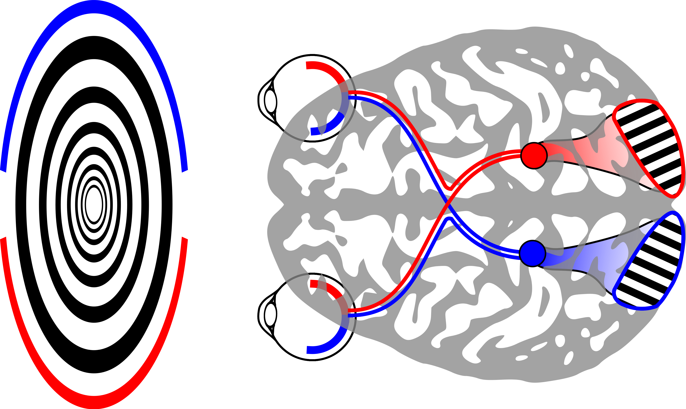
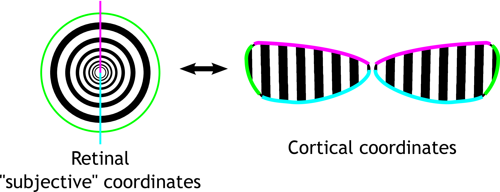
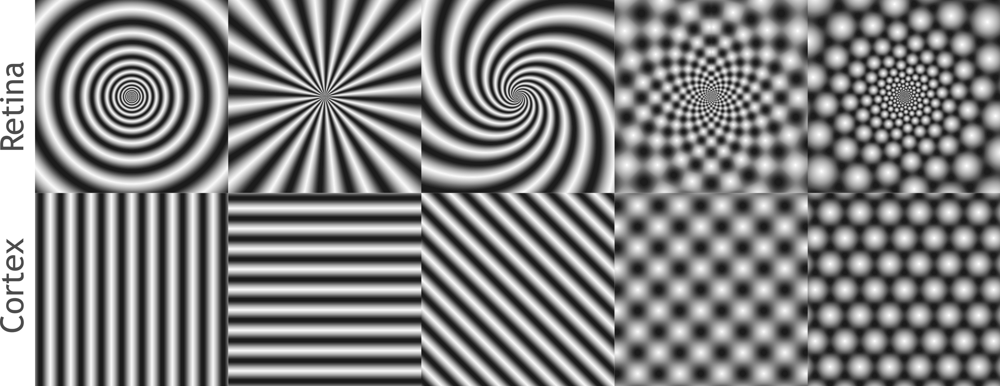

Generating Vivid Geometric Hallucinations using Flicker Phosphenes with the "Neurolyzer Table"
This post covers a very cool new project incorporating the MyKi light called the “Neurolyzer Table”. The table itself is a 2 foot cube with a polypropylene diffuser for the top. The table itself can be used as anything from a coffee table, to a stand for artwork such as glass or sculpture, to a backdrop for a retail store. But in this particular usage, the Neurolyzer is being used as a "scientific" tool to explore the way that the visual cortex interprets lights strobing at very carefully chosen rates.
The result of looking directly into the Neurolyzer is a complex and incompletely understood interaction between the flickering visual system, the eye, and the visual cortex.
In summary, by strobing at frequencies near intrinsic "brain waves" the Neurolyzer sets up a standing wave inside of your brain that causes you to imagine seeing complex patterns.
These patterns are similar to a subset of hallucinations seen on some psychadelic drugs, and may be similar in origin. Here is a video of the device in action at Boston Decom 2012.
For a detailed neurological explanation of the behavior of this device, as well as mechanical build instructions and code to develop your own system, please see below the break.
Geometric hallucinations induced by flickering light
Most people see colorful geometric patterns when looking at uniform
flickering lights of a certain frequency. These are sometimes called "flicker phosphene hallucinations". These patterns are subjectively
described as "checkerboards" "ripples" "circles" "starbursts" "honeycombs",
taking on an overall tunnel-like appearance. It is striking how universal
these patterns are -- these simple flicker-induced geometric hallucinations
are similar across individuals, and are similar to some visual
hallucinations seen in visual-triggered epilepsy, migraine auras, and
hallucinogens. Indeed, flicker phosphenes are presumed to be the same as the flicker-triggered seizures, but only progress to out-of-control activity in individuals with epilepsy. A simple way to achieve such hallucinations is to close one's eyes and face toward the sun. Then, with fingers outstretched and
separated, wave the hand back and forth in front of the eyes. Your fingers
will create a flickering of the sunlight, which will be diffused and made
uniform by closed eyelids.
The shortest primer on the brain and visual system ever
To understand how flickering lights can trigger geometric hallucinations, and why the hallucinations take on particular forms, we need to understand a little about the nervous system. I attempt to give a short overview here.
Very briefly ( wiki wiki ), the eye and the brain contain cells called neurons which are specialized for computation. Neurons communicate with each other in all-or-nothing events called action potentials or "spikes", which propagate along "wires" called
axons, extending away from the cell body. These spikes are picked up by other neurons with more local tree of wires called dendrites.
Early visual processing relates to the sort of geometric hallucinations that we can get out of the early visual system. Light enters the eyes and is picked up by photoreceptor cells in the retina. These cells communicate to neurons in the retina that compress visual input, which is sent to visual cortex for further processing. We will focus on four aspects of this compression related to flicker induced geometric visual hallucinations:
1. The RGB color-space picked up by the photo-receptors is converted to three contrasts : light-dark, yellow-blue, and red-green. The color-space conversion relates to how, for instance, a red-green flicker is especially effective at eliciting hallucinations.
2. The image is converted to a representation that focuses on edges and contrasts -- uniform areas are ignored. This band-pass natur of early visual processing relates to how neurons are connected in the retina and visual cortex, which in turns determines what size "waves" might appear in geometric visual hallucinations.
3. The retina has band-pass properties in time as well: slowly changing visual inputs are not registered. This is important for the temporal aspect of flicker induced hallucinations. Certain speeds of flickering will be picked up and transmitted better.
4. The eye has the greatest resolution in the very center, and the resolution drops off toward the periphery. This is why, for example, it is difficult to read things out of the corner of your eye. The brain also devotes less space to processing the periphery. The way that the visual field is "unfolded" in the brain determines the subjective appearance of spontaneous ( hallucinated ) neural activity.
A theory of geometric visual hallucinations
A theory on the origin of geometric visual hallucinations comes from Ermentrout and Cowen (1979), and briefly, makes the following hypotheses:
The tunnel-like appearance of the overall hallucination relates to how the brain maps the visual field.
Patterns like checkerboards and honeycombs arise from superposition of multiple waves
Local interactions in the brain generate wave-like patterns of activity
The two halves of the visual field are split apart and each processed in one half of the brain. The brain devotes more processing power toward the center of the visual field. The net effect is to "unfold" the circular visual field from the retina into a "strip" of the brain at the back called the primary visual cortex. The result is that tunnel-like visual inputs map to simple regular patterns in the brain, and the inverse: hallucinated simple regular patterns in visual cortex are subjectively experienced as tunnel-like visual inputs.


Single plane waves of activity in the brain can explain circular, spiral, and starburst hallucinations. Checkerboards can be explained as the sum of two waves at right-angles, and honeycombs can be explains as the sum of three evenly spaced plane waves.

The conditions under which the brain spontaneously forms waves of activity are an open question. Qualitatively, one can of it as the brain trying to "find" patterns in an image. Under certain circumstances, the pattern finding circuitry becomes unstable, and tends toward these simple, wave-like patterns.
Driving the brain with a uniform, flickering input
Neural activity in the brain oscillates spontaneously. There is a natural 8-12Hz oscillation in the visual system called the alpha rhythm.
Providing visual input at alpha frequency excites this oscillation. Stimulation at 8-25Hz also works to excite the alpha oscillation. Even though this is twice the intrinsic frequency of the system, local patches of the brain are hypothesized to respond only to every-other oscillation cycle, effectively oscillating at alpha. The percise optimal frequencies vary from person to person, and there may be other processes contributing to flicker hallucinations that we have yet to understand. Interestingly, different frequencies favor different patterns.
Why does making visual cortex "resonate" lead to pattern formation? The qualitative idea is quite simple: consider shaking a tray of water up and down. Even though you are forcing the whole tray uniformly, if you hit the right frequencies, you can create standing waves. The visual cortex does something similar when you hit it with flickering light. When you average out the details of the brain, it turns out it's a lot like any other excitable, oscillatory, medium. Flicker phosphenes can be thought of like standing waves arising in a periodically forced fluid -- water in a speaker cone, for example. My personal favorite, however, is the nonlinear: cornstarch in water.
Math.
It is possible to build a mathematical model that, to a fist approximation, captures the response of visual cortex to flickering stimuli. This model is taken from this paper. Modeling individual neurons is very difficult and, and accurate modeling a network the size of the visual cortex is not yet possible. Instead, we will look at the very fuzzy average behavior of neurons. This will be sufficient to capture wave dynamics that are large compared to the size of indivisual cells. This is approach is a type of "mean field" approximation. We use very basic assumptions:
There are two populations of cells that matter: inhibitory and excitatory ( call them $E$ and $I$ )
At each point in the visual cortex, a neural population can be summarized by an "average firing rate". Represent these rates as functions over two dimensions $E(x,y)$ and $I(x,y)$.
Cells connect to each-other locally, with inhibition spreading further than excitation. Approximate these connections with Gaussian convoltuions.
A neural population sums its inputs linearly
Neural populations apply a soft thresholding nonlinearity to map from input to firing rate
Average neural firing rates evolve smoothly, with excitation a bit faster than inhibition
These assumptions are enought to begin building a model. Cells connect to each other locally, modeling connections as Gaussian:
$$W_e = K_e(x,y) \ast E(x,y), \,\,\,where\,\,\, K_e(x,y) = \frac{1}{\sigma_e \sqrt{2\pi}}exp \left(-\frac{x^2+y^2}{2 \sigma_e^2} \right)$$
$$W_i = K_i(x,y) \ast I(x,y), \,\,\,where\,\,\, K_i(x,y) = \frac{1}{\sigma_i \sqrt{2\pi}}exp \left(-\frac{x^2+y^2}{2 \sigma_i^2} \right)$$
A neural population sums its inputs linearly, with some unknown weighting
$$E_{input} = a_{ee} W_e - a_{ie} W_i$$
$$I_{input} = a_{ei} W_e - a_{ii} W_i$$
Neural populations apply a soft thresholding nonlinearity to map from input to firing rate.
Let's use
$f(x)=1/(1+exp(-x))$
for a nonlinearity, and give it an adjustable threshold value $t$:
$$E_{activation} = f(E_{input} - t_e)$$
$$I_{activation} = f(I_{input} - t_i)$$
Add in stimulus input terms
$$E_{activation} = f(E_{input} - t_e + s_e (t) )$$
$$I_{activation} = f(I_{input} - t_i + s_i (t) )$$
Average neural firing rates evolve smoothly
$$ \tau_e \dot E = -E + a_e E_{activation} $$
$$ \tau_i \dot I = -I + a_i I_{activation} $$
This is the model. Expanding it
$$ \tau_e \dot E = -E + f( a_{ee} W_e - a_{ie} W_i - t_e + s_e (t) ) $$
$$ \tau_i \dot I = -I + f( a_{ei} W_e - a_{ii} W_i - t_i + s_i (t) ) $$
To see whether this system "hallucinates", one can look for the emergence of waves in the solution to these equations over time. The simplest way to get started is to simulate these equations and play with the parameters and see what happens. You should find that there are parameter regimes where waves form spontaneously -- and others where waves can only be supported by periodic forcing. These would correspond to "spontaneous" and "flicker-induced" geometric hallucinations, respectively. This paper gives some starting parameters of $\tau_e=10$ $\tau_i=20$ $a_{ee}=10$, $a_{ei}=12$, $a_{ie}=8.5$, $a_{ii}=3$, $t_e=3.5$, $t_i=3.5$, $\sigma_i = 2.5 \sigma_e$. We found that this system preferrs to form stripes and honeycombs -- no checkerboards. Maybe you can find a similar system that supports checkerboards as well?
Understanding the behavior of this system is a challenge since there is a time-varying periodic input. This means that one cannot examine whether spatial waves from from the rest state (there is no rest state). We need to convert our system to a representation that incoroporates the time varying input. Since the input is periodic, one can use floquet theory to convert these equations into a linear map. This map represents the evolution of the system over one period of forcing. In particular, we will start with the spatially uniform state, and ask whether this state is stable over time. One way to phrase this is to ask if there is any "mixing" between the spatially uniform mode and "wave" modes over the course of one oscillation -- and whether this mixing will cause the wave modes to grow over time. Another way to think of this is that the periodic stimulus briefly pushes the brain through a state where it is spontaneously pattern forming, and the map summarizes the net effect of this over one cycle of stimuluation. When we do this, we find that under certain frequencies of periodic forcing, a single spatial frequency begins to grow -- these are the conditions needed to explain a flicker-induced hallucination. More details of this treatment, which uses a mixture of algebraic and numerical techniques, can be found in this article.
So
Some flicker-induced geometric visual hallucinations can be thought of as "ripples" and "standing waves" excited by the flickering light, occuring in the brain. The model outlined here captures wave modes, but there are many open questions. For example, no mathematical model has treated the interaction of flicker phosphene hallucinations with color perception, or interactions with finer-scale neural connectivity in visual cortex related to extraction of intermediate visual features. The phenomena is an interesting "hack" that reveals the inner workings of the early human visual system without the need for "phamacological" assistance, and may be a useful tool in psychopysics for noninvasively probing early vision.